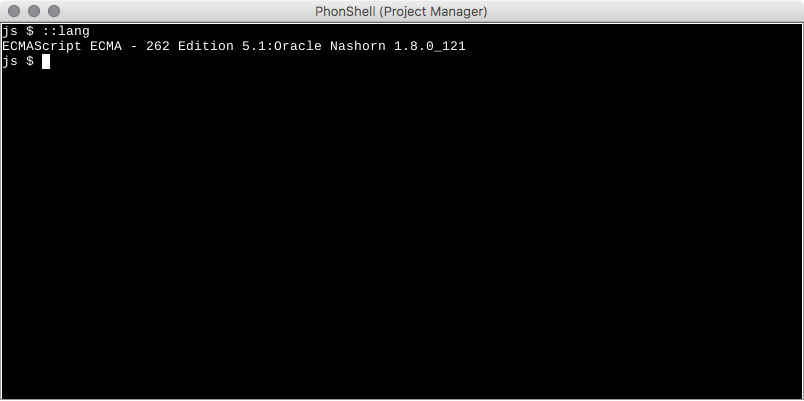

PhonShell
PhonShell, available from the Tools menu, provides a scripting environment for Phon with options for scripting in either JavaScript or Groovy. The PhonShell console is associated to the window from which it was opened and will be closed when the parent window is closed.

Visit https://www.phon.ca/apidocs/ to view the current API for Phon.
Usage
When opening PhonShell, you will be presented with a prompt such as:
js $The first part of the prompt js indicates the language being processed (in this case it's JavaScript.) PhonShell can execute statments in any scripting language available to the running Java virtual machine. By default, PhonShell supports JavaScript and Groovy.
Built-in Commands
::langs
Print a list of available languages.
js $ ::langs
ECMAScript 1.8:Mozilla Rhino 1.7 release 3 PRERELEASE
Groovy 2.2.1:Groovy Scripting Engine 2.0::lang <lang>
Switch to the specified language. Excluding <lang> will print the current language setting.
js $ ::lang Groovy
Groovy 2.2.1:Groovy Scripting Engine 2.0
groovy $Notice how the prompt has changed to indicate the new language setting.
::exec <script>
Execute the specified script. The script may be a file on disk, or any readable URL.
js $ ::exec "C:\Users\Me\MyPhonScripts\SomeScript.js"
...clear
Clears the screen.
js $ clearreset
Reset the scripting environment, discarding all variables in the current context.
js $ reset> <buffer>
Output from statements/scripts is output to the console by default. To re-direct the output to a Phon buffer window, terminate your statement with > <buffer>, where <buffer> is the name of a new Phon buffer. If a buffer with the given name already exists, it is overwritten.
js $ println("Hello World!");
Hello World!
js $ println("Hello World!"); > out
js $After executing the second statement, "Hello World!" will be printed in a new Phon buffer named 'out'.
>> <buffer>
Data may also be appended to currently a existing buffer by using the >> operator. If the named buffer does not exist it will be created.
js $ println("Hello World..."); >> out
js $ println("goodbye sanity!"); >> out
js $In the first statement, 'Hello World...' is printed in a new Phon buffer named 'out'. In the second statement 'goodbye sanity!' is appended to the same buffer.
Built-in Variables
window
Provides a reference to the window from which the PhonShell console was opened. For the Project Manager this will be an instance of ca.phon.app.ProjectWindow and for the Session Editor this will be an instance of ca.phon.app.session.SessionEditor. References to the current project and session can be obtained using the window variable.
js $ window.project
ca.phon.project.LocalProject@2d014748
js $ window.project.name
MyProject
js $ window.session.name
MySession
js $ window.session.recordCount
45__last
The last value returned by executing a statement.
js $ x = 1+4;
5.0
js $ __last
5.0
js $ __last + 1
6.0Saved Scripts
PhonShell scripts which have been saved to disk may be executed by using ::exec as mentioned above or by dragging the file onto an open PhonShell window using the mouse. PhonShell scripts saved in the folder /Users/<username>/Library/ApplicationSupport/Phon/phonshell on macos or %APPDATA%\Phon\phonshell on windows will be displayed in the window menu under Tools > PhonShell scripts and may be executed by clicking the script name. The script will be executed in a new PhonShell window connected to the currently focused window. Scripts may also be saved and re-distributed with a project by placing the script in the __res/phonshell folder of the project file structure. Note: Built-in commands are not available inside saved script files.